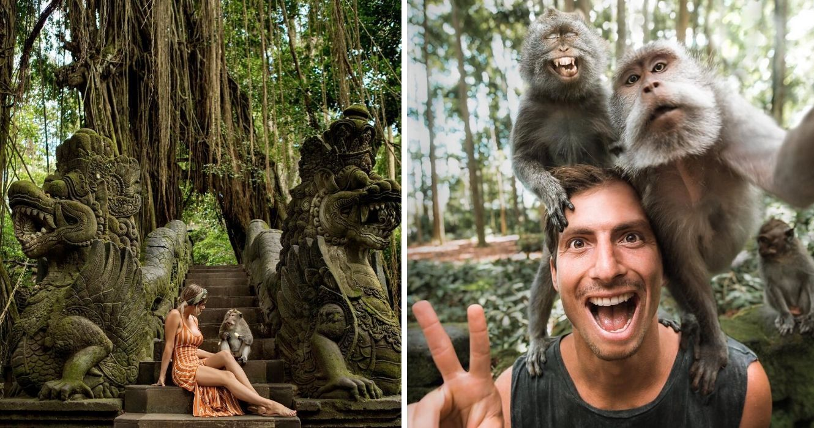
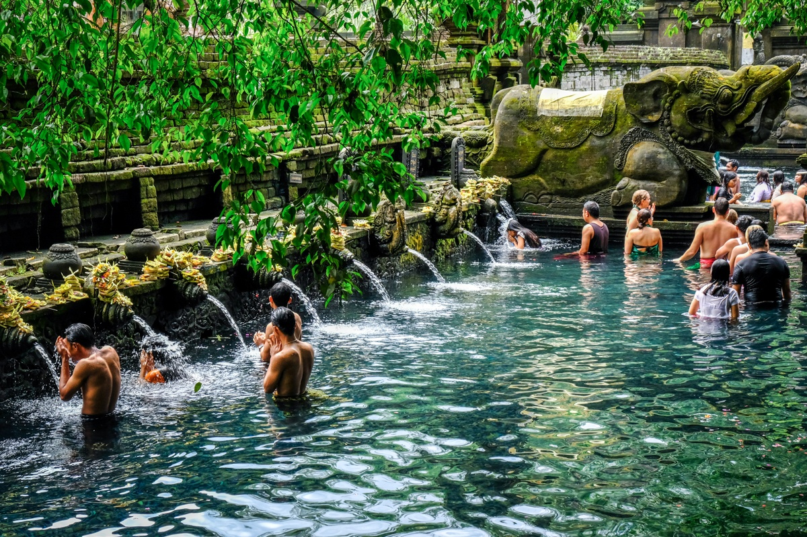
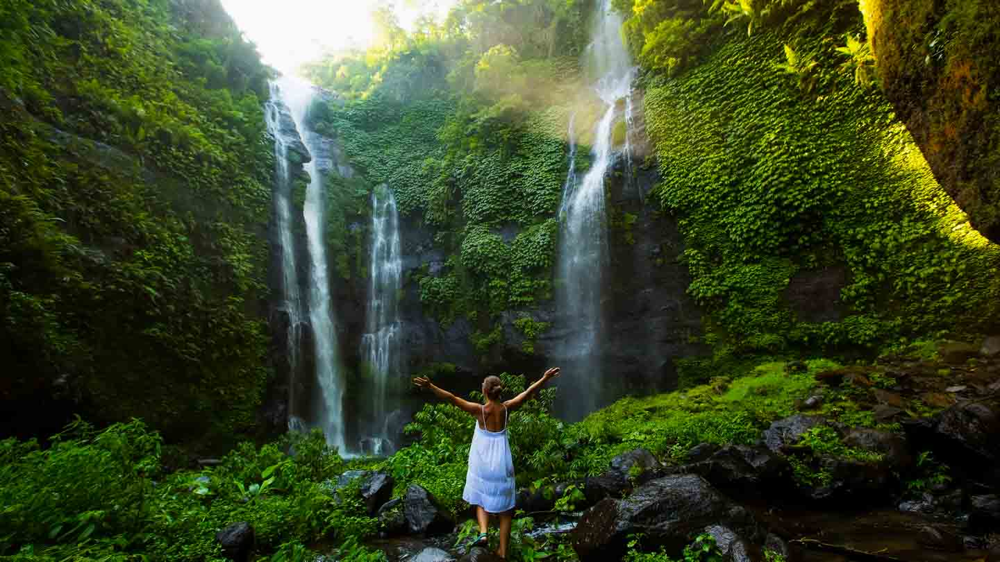
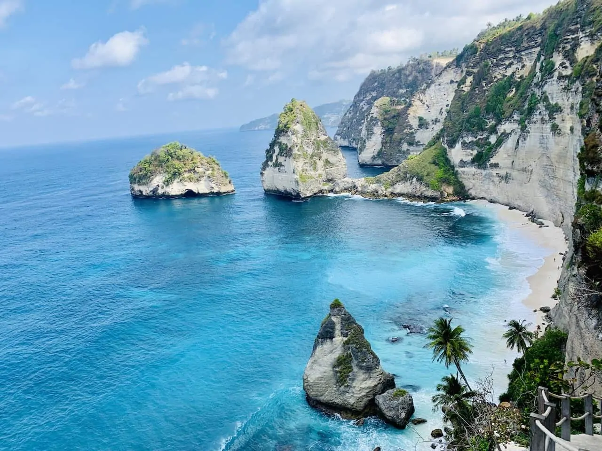
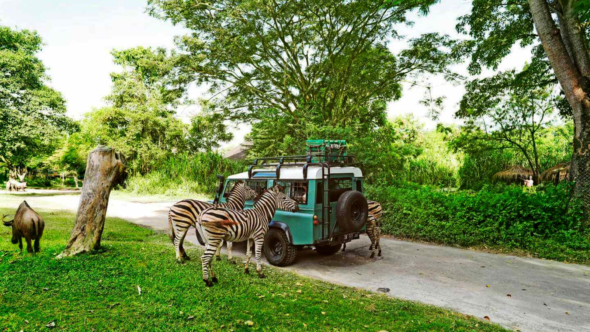

<!DOCTYPE html>
<html lang="en">

</html>

<head>
  <meta charset="UTF-8">
  <title>Welcome to Bali</title>
  <link rel="stylesheet" href="style.css">
  <link rel="preconnect" href="https://fonts.googleapis.com">
  <link rel="preconnect" href="https://fonts.gstatic.com" crossorigin>
  <link href="https://fonts.googleapis.com/css2?family=Poppins:wght@200;300;400;600;700&display=swap" rel="stylesheet">

</head>

<body>
  <article class="topnav">
    <a class="active" href="index.html">Home</a>
    <a href="todo.html">Attractions</a>
    <a href="contact.html">Contact</a>
  </article>
  <section class="text-boxx">
    <h1>Best Things To Do in Bali</h1>
    <p style="font-size: large">There is no particular order of the best things to do in Bali, in this article we
      outline the top 10.</p>
  </section>

  <br></br>
  <h2>1. Visit Uluwatu Temple (u-lu-qua-tu)</h2>
  </img>
  <p style="font-size: medium">Uluwatu is famous for epic cliffs and pristine beaches, and the Uluwatu Temple (built
    at
    the edge of a cliff).<br></br> At sunset every night, the Uluwatu Temple hosts a Kecak Dance performance, which is
    a
    rhythmic musical performance.</p>
  <p style="font-size: medium">Cost:$60 per person</p>
  <p style="font-size: medium">Age Requirements: None</p>

  <h2>2. Tour Around Nusa Penida </h2>
  </img>
  <p style="font-size: medium">Nusa Penida is mostly known for its great diving spots. The seabed of this maritime
    zone
    is home to 296 species <br></br> of coral and 576 species of reef fish. You can practice snorkeling, scuba diving
    or
    free diving here.</p>
  <p style="font-size: medium">Cost: $11 per person</p>
  <p style="font-size: medium">Age Requirements: None</p>

  <h2>3. Visit Ubud </h2>
  </img>
  <p style="font-size: medium">There’s a sacred monkey forest sanctuary in Ubud where you can get up close with
    monkeys
    in Bali like <br></br> never before. There are also three temples inside the monkey forest, namely Dalem Agung
    Padangtegal <br></br> Temple, Holy Spring Temple and Prajapati Temple. </p>
  <p style="font-size: medium">Cost: $25 per person</p>
  <p style="font-size: medium" p>Age Requirements: None</p>

  <h2>4. Explore Tirta Empul Temple</h2>
  </img>
  <p style="font-size: medium"> The locals believe that the sacred water flowing at the Tirta Empul Temple has the
    power
    to heal and <br></br> cleanse bodies and souls. Soaking in the spring water in this serene and historic temple is
    an
    experience not to be forgotten. </p>
  <p style="font-size: medium">Cost: $34 per person</p>
  <p style="font-size: medium">Age Requirements: None</p>

  <h2>5. Explore Tegalalang Rice Terraces</h2>
  </img>
  <p style="font-size: medium"> These Balinese sculptured rice terraces offer tourists a chance to enjoy nature and a
    valuable glimpse of <br></br>local culture and customs. Tourists can swing on the famous swing of Tegalalang. </p>
  <p style="font-size: medium">Cost: $35 per person</p>
  <p style="font-size: medium">Age Requirements: None</p>

  <h2>6.Gaze At The Stunning Sekumpil Waterfall</h2>
  </img>
  <p style="font-size: medium"> The magnificent waterfall is surrounded by lush rainforest, and you’ll definitely hear
    the thundering roar <br></br> of the water before you see it. Sekumpul really is stunning to behold, and you’re
    sure
    to get lots of fantastic <br></br>photos of the water cascading down amidst the forest into the pool below. </p>
  <p style="font-size: medium">Cost: $50 per person</p>
  <p style="font-size: medium">Age Requirements: None</p>

  <h2>7.Hike Up Active Volcano Mount Agung</h2>
  </img>
  <p style="font-size: medium"> If you’re lucky enough to visit when the mountain has settled down, the trek to the
    top
    takes around four hours. <br></br>Lots of people start in the middle of the night so they can watch the sunrise
    from
    the summit. </p>
  <p style="font-size: medium">Cost: $74 for permit and guide</p>
  <p style="font-size: medium">Age Requirements: None</p>

  <h2>8.Visit Diamond Beach</h2>
  </img>
  <p style="font-size: medium"> Diamond Beach has been titles the 'most beautiful place in Bali' because of the White
    beaches, <br></br> silk blue water, and palm trees on the foot of an enormous limestone cliff. </p>
  <p style="font-size: medium">Cost: $0.75 per person</p>
  <p style="font-size: medium">Age Requirements: None</p>

  <h2>9. Surf at Kuta Beach</h2>
  </img>
  <p style="font-size: medium"> Famous for its spectacular white sandy beach, entertaining nightlife, restaurants,
    bars,
    pubs, and shopping <br></br> centers, Kuta is the biggest and most energetic beach in Bali. </p>
  <p style="font-size: medium">Cost: $26 for surf lesson</p>
  <p style="font-size: medium">Age Requirements: None</p>

  <h2>10. Visit Bali Safari and Marine Park</h2>
  </img>
  <p style="font-size: medium"> This attraction offers a Balinese cultural entertainment and the latest design in
    wildlife encounter. <br></br>The park is home for more than 1000 individual animals of 100 selected exotic and
    endemic Indonesian <br></br>species such as Komodo Dragons, Orangutan, Bali Starling and Sumatran Elephant and
    more.
  </p>
  <p style="font-size: medium">Cost: $50 per person</p>
  <p style="font-size: medium">Age Requirements: None</p>
  </div>


  <footer>
    <p>Copyright &copy; 2022; Website Designed by Sohila Abdelnabi </p>
  </footer>
</body>

</html>